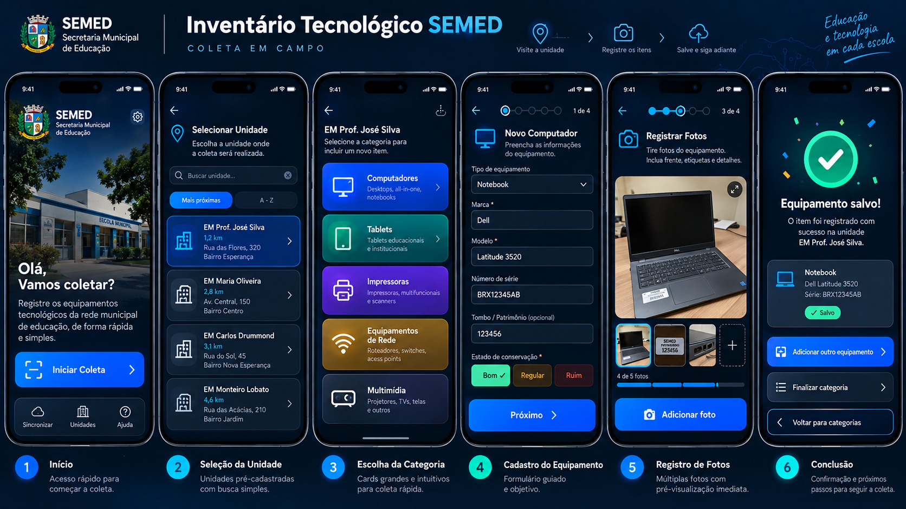
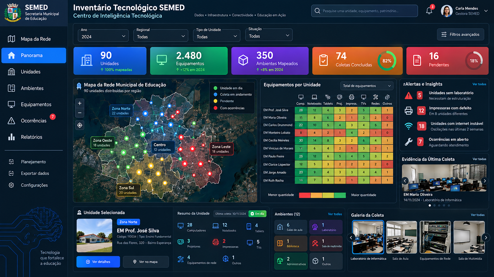
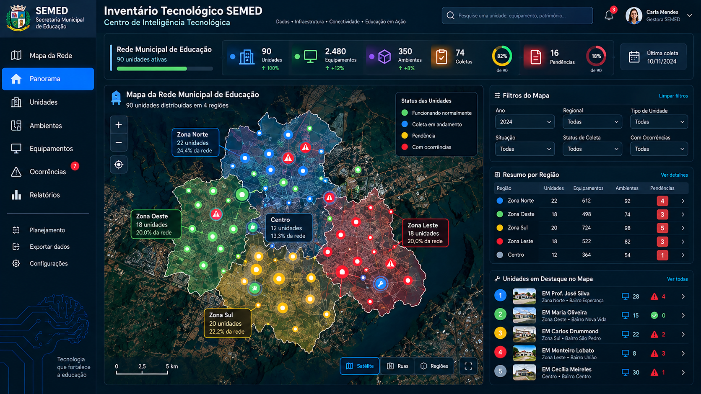
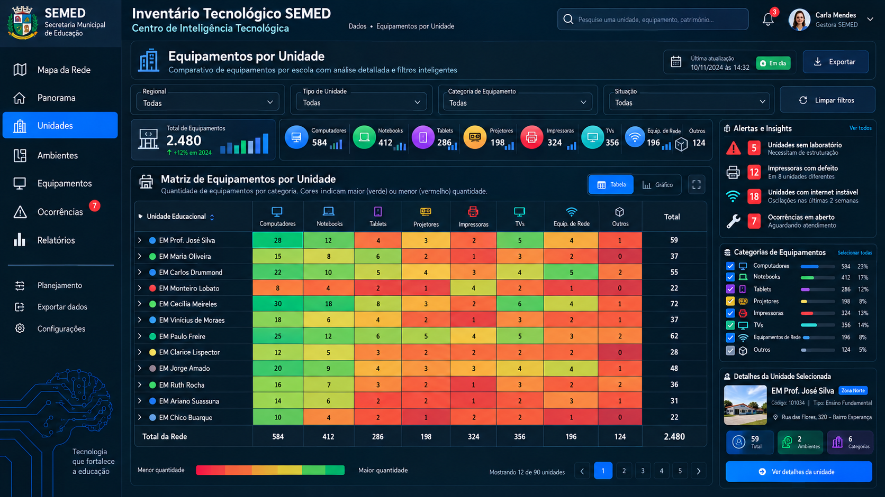
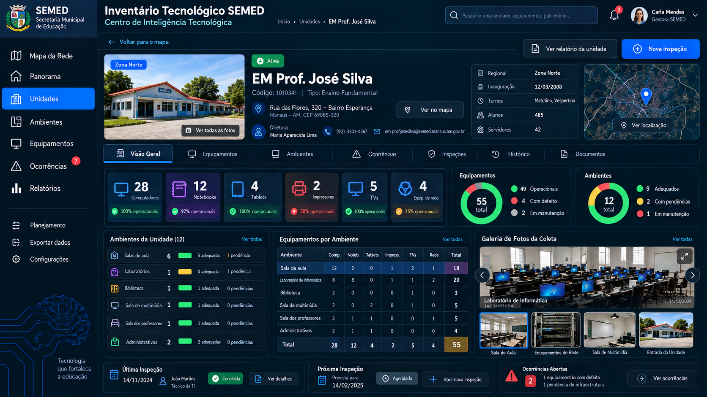
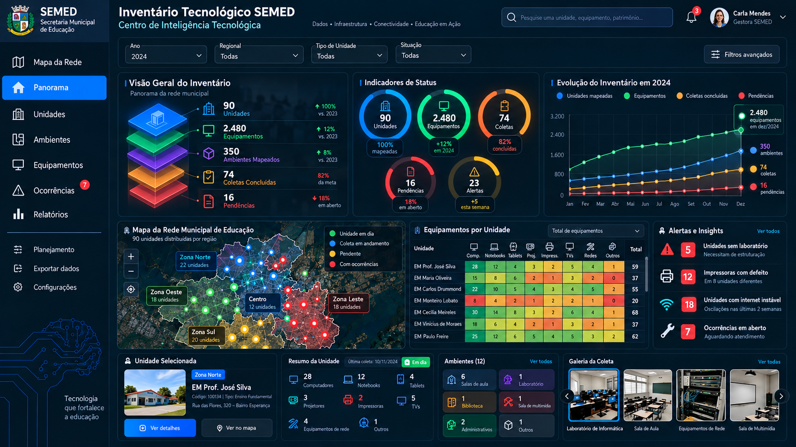

Etapa 1 — Coleta Mobile
Imagem mestra; coleta pura, em cartões e formulários guiados.

Abra este HTML localmente depois de extrair o pacote. As seis imagens são do projeto; nomes e números dentro delas são ilustrativos.
Imagem mestra; coleta pura, em cartões e formulários guiados.

Visual geral; mapa + matriz + unidade selecionada.

Mapa dominante com filtros laterais.

Heatmap de quantidades por escola/categoria.

Ficha da escola e fotos.

Estudo alternativo à fileira de KPI cards.
